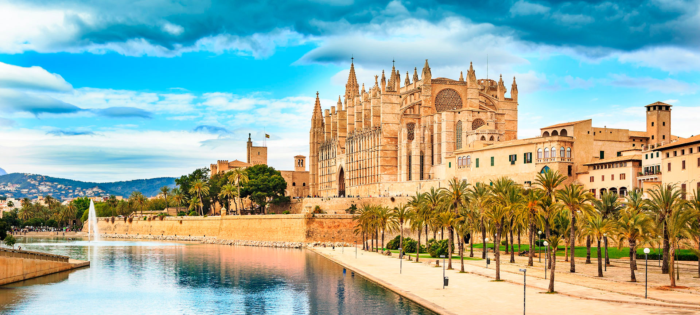
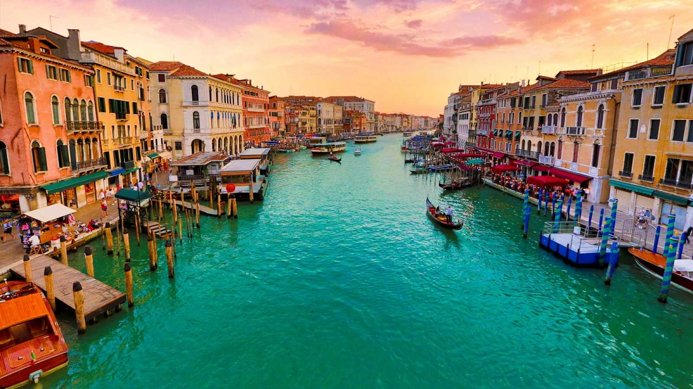
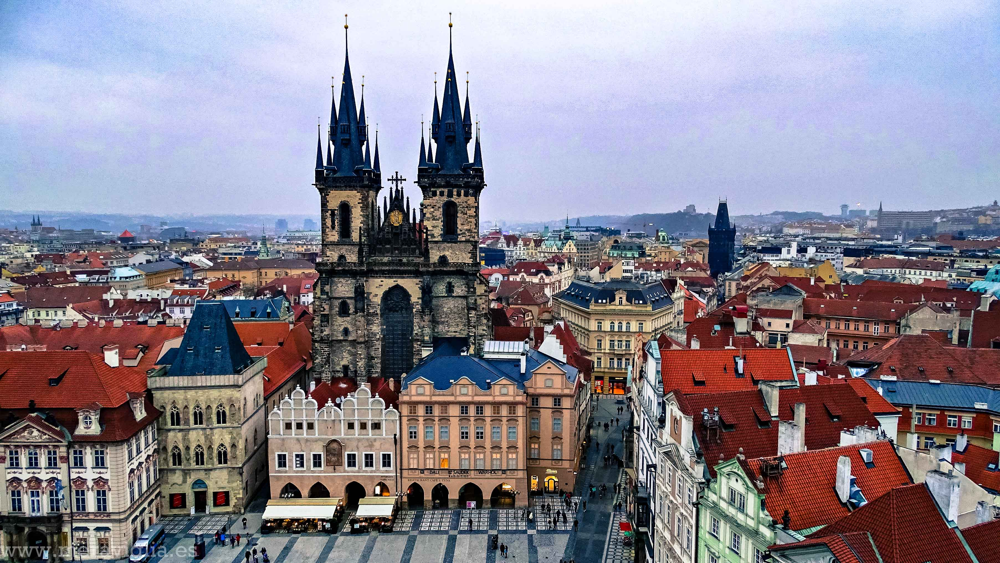

Viajar a las Islas Baleares
Si estás buscando unas vacaciones llenas de actividades, diversión y vida nocturna, Mallorca es el lugar perfecto para ti. Sin embargo, si prefieres un destino tranquilo, auténtico y en el que puedas disfrutar de preciosas playas y naturaleza incontaminada, Menorca es la isla que más se adapta a tus necesidades.
DESCUBRELOViajar a Venecia
Lo ideal para disfrutar de Venecia con calma es pasar 3 días en la ciudad. De esta manera tendrás tiempo para ver la mayor parte de los atractivos turísticos del centro , hacer unas cuantas actividades e incluso alguna excursión. es la isla que más se adapta a tus necesidades.
DESCUBRELOViajar a Praga
El gran castillo, la plaza vieja, el reloj astronómico, las antiguas torres de vigilancia, el barrio judio y la multitud de iglesias de todas las religiones han hecho que todo el centro de Praga sea considerado Patrimonio de la Humanidad.
DESCUBRELO